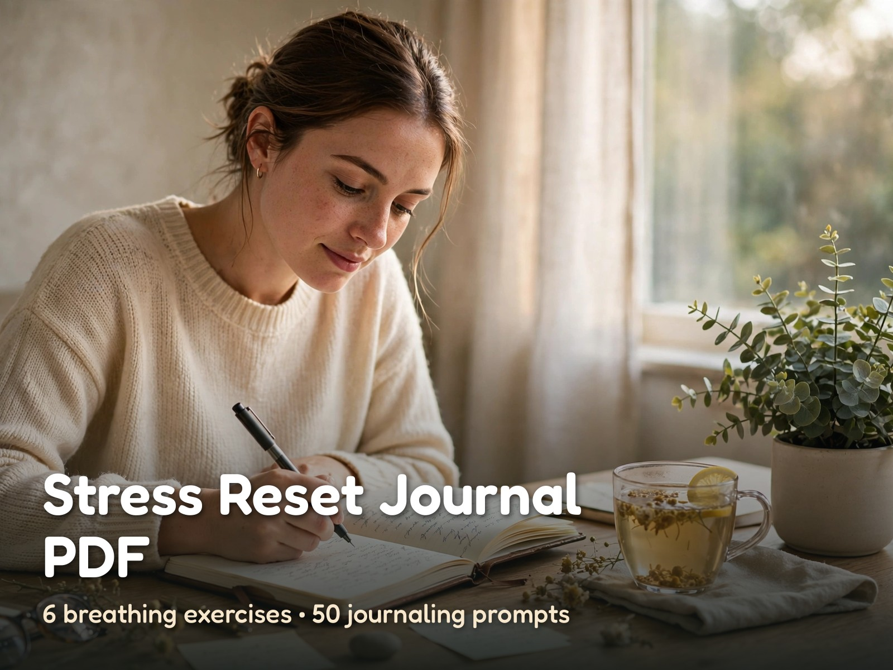

$9 USD — instant download
Stress Reset Journal PDF — 6 Breathing Exercises & 50 Journaling Prompts for Everyday Stress
Get it on GumroadStress has two components: a body running hot, and a mind running in circles. This journal works on both, in that order — breath first, because a calm body makes an honest page possible; then writing, because thoughts on paper stop looping and start queuing. Six guided breathing exercises and fifty journaling prompts, built into a daily reset you can finish in minutes.
Box Breathing, Extended Exhale, the Physiological Sigh, 5-5 Coherent Breathing, Counting Breaths and a Belly Breathing Reset — each with step-by-step instructions, exact counts and timing, and guidance on when to use it: before a hard conversation, at bedtime, in a sudden spike. No vague ‘breathe deeply’ anywhere; every exercise tells you precisely what to do with the next breath, and the safety note is plain — if an exercise ever makes you dizzy, you stop and breathe normally.
The Daily Reset Page is a five-section, five-minute template — state check, brain dump, one true thing, today's one thing, tonight's off-ramp — with a fully filled-in example day so it never feels abstract. The 50 journaling prompts come in five sets of ten, organised by the kind of stress you are carrying: overwhelm, work and money, people and relationships, rest and energy, and perspective and letting go. They are written to go deeper than ‘dear diary’ without turning journaling into homework. A 7-day on-ramp assigns one small piece per day, so within a week you have used every part of the journal once.
Six questions and fifteen minutes turn seven daily pages into a dashboard: average stress, what repeated, what actually helped. This is a self-organization and relaxation tool for everyday stress. It is not medical or mental-health advice and not a treatment for anxiety, depression or any other condition — a short note inside explains when professional support is the right step. The templates are designed to copy into any notebook, so the journal can live on paper even though it arrives as a PDF.
This is a digital download — no physical item will be shipped. For personal use; please do not redistribute or resell the file.